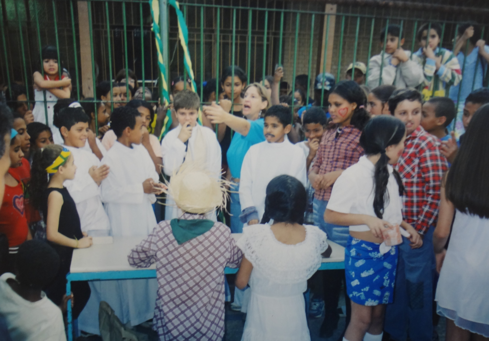
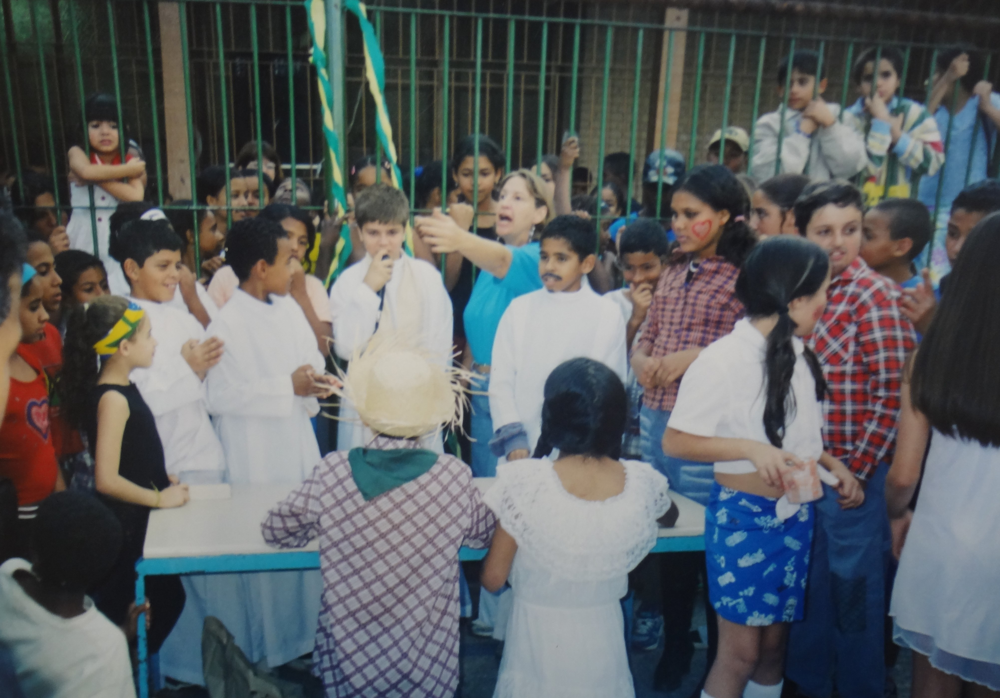

Conflitos: uma questão de classe
COMO A MEDIAÇÃO DE CONFLITOS PODE MINIMIZAR A VIOLÊNCIA ESCOLAR
A educação brasileira como um todo passou a ser analisada a pouco tempo, antigamente, não se podia falar sobre indicadores como Enem e Enade, para basear se os estudos passados eram realmente absorvidos pelos alunos.
Partindo dessa ideia, a violência como fenômeno social, no âmbito escolar também passou a ser analisada a pouco tempo, havendo ainda poucas estatísticas para serem comparadas como em outros fenômenos de violência.
Segundo a pesquisa realizada pelo APEOESP, publicada em dezembro de 2019, o que sabemos é que houve um aumento de casos de violência nas escolas públicas de São Paulo.

Com esse cenário, é preciso, antes de mais nada, entender os contextos que levam um jovem a ter um comportamento agressivo. Lembrando que existem vários formatos de violência que se manifestam de maneiras diferentes, frustrando professores e alunos e refletindo no ambiente escolar e nos conflitos que presenciamos nos dias de hoje.
SEM GRADES
As formas de repressão e afastamento, também são praticadas de forma velada, seja pelo formato visual da escola, a abertura para o diálogo ou até mesmo pelas cores das paredes e as trancas nas portas.
A chamada violência simbólica, no âmbito escolar, muitas vezes tem ligação com o local onde está inserida a Instituição, o bairro onde a escola se encontra e os estigmas que ele sofre, e isso influencia nas formas da gestão trabalhar dentro das escolas. Tornando muitas vezes normal a colocação de grades para se garantir a segurança.
“Quando você tem uma escola com grades no guichê da cozinha, impedindo o contato do aluno com a merendeira, você está dando um recado, você está dizendo qual a natureza da relação que você tem com o aluno, com a comunidade”, é assim que se inicia a fala de Rafael Silva, Diretor da EMEF Brasil Japão e ganhador do 7ª edição do Prêmio Municipal de Educação em Direitos Humanos(2019), realizado pela Secretaria Municipal de Direitos Humanos e Cidadania em parceria com a Secretaria Municipal de Educação.
Segundo o diretor, a escola sofria com algumas marcas, tendo como uma de suas frases: “Brasil Japão, Febem do Rio Pequeno” e “Brasil Japão, entra burro e são ladrão”, assim, a decisão de retirada das grades consideradas por eles desnecessárias, foi de grande impacto para a comunidade e professores.
Para Rafael, “a gestão é estratégica, você pode ter um corpo docente engajado, mas se a gestão não gerar condições de trabalho e de transformação (...) se a gestão não trabalhar em prol disso a escola não consegue se transformar de maneira positiva”.

Não basta garantir o acesso, precisa garantir que ele permaneça e depois precisa garantir a qualidade nessa permanência.
-Rafael Silva
Enquanto escolas mantém esse pensamento de escola bancária, Rafael acredita que com o imaginário de que a educação só pode se desenvolver com base no princípio da vigilância e de cessar a liberdade individual, as escolas deixam de construir um processo de humanização dos espaços escolares e ressignificar esses espaços. Ao invés de construir com a comunidade, uma comunicação e arquitetura não violenta, reforçam a violência simbólica e não utilizam do processo dialógico, que contribui para a saúde emocional dos alunos, como rodas de conversas, justiça restaurativa, teatro, artes, etc. Para ele o motivo das crianças evadirem estaria ligado a essa falta de vínculo, mas principalmente, questões de racismo.
“A vulnerabilidade escolar, tem vários fatores, inclusive, o racismo (...) não é coincidência que a maioria das crianças que abandonam a escola são negras (...) a evasão escolar é uma bomba, porque se você vai em um presidio, de cada 10 presos, 8% abandonaram as escolas, se você vai na Fundação casa, todos eles abandonaram as escolas, todos foram evadidos”, complementa.
Além disso, ele explica que foi preciso que houvesse um diálogo com comunidade e professores, a fim de identificar possíveis falhas, ou grades realmente necessárias e também no intuito de preparar o corpo docente para as mudanças. Para Rafael, sem o apoio de todos, manter esse elo entre o professor e os alunos seria tarefa difícil de acontecer.


Comparação do antes e depois das mudanças na escola, na foto o pátio da EMEF Brasil-Japão
Imagem: Acervo da escola
Nesse contexto, a escola sofre o impacto direto da situação social do país, quanto pior a situação: desemprego, violência urbana, etc. mais isso aparece refletido na escola. A retirada das grades foi uma forma de minimizar essa sensação de repressão.
“É simples, uma criança de 6 anos ou um adolescente de 14 anos, essas crianças passam cinco horas no mínimo na escola, às vezes, mais na escola do que com o pai e a mãe, toda aquela carga do que ela vive lá fora, ela vai trazer (...) desde que retiramos as grades conseguimos perceber a mudança no comportamento das crianças, até em questão de violência, as atitudes mudaram“, afirma.
Para Jaqueline Marinho, professora na escola Aclamado, é fundamental o trabalho da autonomia do estudante.
“Ensinar não pode ser algo que você chega na sala, fala um monte de coisas, como se fosse uma palestra, achando que o seu estudante não sabe nada e você está ali para depositar saber nele, não, a educação não é isso, é ensinar e aprender, ensinar é construir um pensamento crítico com o estudante”, afirma.
 


Para a professora, o aluno chega com vários saberes dentro da escola, que são os produzidos social e culturalmente, o professor deve chegar com outros saberes complementares e assim dialogar com esse estudante para que assim ele aprenda.
“É fundamental trabalhar autonomia para que esse aluno se enxergue no processo de aprendizagem, para que ele construa a própria aprendizagem e até critique a forma de aprender, critique a escola (...) é buscar essa autonomia do aluno, é dar voz ao aluno”, explica.
Jaqueline conta que a falta de engajamento dos professores e situação atual do pais, atrapalha esse processo, toda a relação que é criada com os alunos depende do corpo docente, reforçando a ideia anteriormente exposta de que se a Gestão não apoiar esses métodos de ensinos voltados para a autonomia do aluno, eles não podem ser aplicados em sala.
Para alguns colegas é complicado, porque quando você dá a voz ao estudante você também vai permitir que ele te critique, que ele reivindique coisas que ele vê como necessárias para dentro da escola. Esse é um processo dialético e dialógico. No entanto é um processo que para alguns docentes é complicado de ser aceito”, conclui.
SOBRE AS FALTAS
Numa sociedade que atua em um sistema “punitivista”, onde é preciso expor, punir, julgar e excluir o agressor, seja ele menor ou maior, para sentir uma falsa impressão de justiça, o grito pela maioridade penal se tornou um risco.
Com a ingenuidade interrompida e, muitas vezes, sem se enxergar na sociedade, milhares de jovens entre 12 e 17 anos cometem atos infracionais diariamente. Esquecidos pelo Estado e abraçados pelo crime, tentam desfazer, por conta própria, toda desigualdade sofrida, ainda que seja só para si, ou para seus familiares.
“A primeira condição para modificar a realidade consiste em conhecê-la”. – Eduardo Galeano
Para Disleine França, advogada, essa problemática se dá devido a um ciclo continuo. “Você deixa de investir naquela família, naquele jovem, o que ele vai retornar para a sociedade? Nada. A tendência é que a sua falta de estrutura se perpetue por sua vida, desde o início, até seu crescimento e pelas próximas gerações”, explicou.
A vulnerabilidade social, a desigualdade e escassez de recursos são apresentadas aos menores e tem por consequência muito dos cometimentos de atos infracionais, visto que em sua maioria esses atos são cometidos em esfera unicamente patrimonial, ou seja, análogos à roubo, furto, tráfico.
Aquele que se vê excluído, ou à margem da sociedade, não encontra motivação, nem razões, para não continuar infringindo a lei. Pelo contrário, isso o torna ainda mais vulnerável, momento esse em que o sistema criminal o engole de vez, fazendo com que ele não se sinta mais desamparado ali. “Precisamos perceber que custa muito mais para a sociedade punir, do que recuperar. Isso em termos não só de violência no modo geral, mas também em custos financeiros, visto que esse infrator retornando várias vezes a custodia do Estado possui um custo a cada retorno, por isso é tão importante que existam políticas públicas de reinserção desse jovem na sociedade”, complementou Disleine.
Para a advogada, o Estatuto da Criança e do Adolescente (ECA), apesar de parecer muito antigo, ainda é muito recente para conseguir suprir anos de negligência, mas ainda assim, é um passo importante no sentido de proteger e garantir direitos e proteção aos interesses da criança e do adolescente.
“A redução da maioridade não traria impacto na redução da violência, ao contrário, faria com que crianças cada vez mais jovens fossem recrutadas pelo crime. Então se a redução da maioridade penal passa a ser 16 anos, o crime passará a buscar crianças com 12, 13 e 14 anos. Quanto menor a idade da criança, mais fácil de ludibriar e conquistar essa criança para o crime, pois ainda estão em fase de formação de caráter, opinião, responsabilidades”, finaliza.
Nesse sentido, as influencias em volta das escolas, abrem o precedente: como fazer para contornar esse cenário da falta de vinculo da instituição de ensino com a criança?


Quando essas políticas públicas deixam de chegar a esses jovens, seja pela falta de medidas socioeducativas ou outros métodos sociais, condições de apoio, incentivo, entre outras, é também quando passam a ocorrer as desistências.
Na opinião de Jaqueline Marinho, as escolas devem entender que além da importância do professor compreender o lugar em que a escola está inserida - entendendo as necessidades daquele bairro, a cultura local etc para contribuir e conseguir alcançar esses jovens - é preciso concentrar esforços em métodos de ensino inovadores que possam ser usados como forma de prender a atenção desse aluno.
Esse afastamento dos deveres reais da educação acaba produzindo uma escola frágil, com profissionais cansados e uma escola com alunos que não acreditam no processo de aprendizado.

Eu percebia que eles não viam sentido em estar dentro da escola.
-Jaqueline Silva
Para ela, se professores cada vez mais recorressem à essas práticas, situações como essas se tornariam ainda menos preocupantes, e reforçariam a importância de incluir de várias formas dentro de seus conteúdos, reflexões sobre as relações que se encontram dentro da escola, permitindo que elas se sintam compreendidas por parte da escola, o que não ocorre.
“A escola reproduz relações autoritárias de poder e de hierarquia, não considerando os problemas que esses jovens levam para Instituição, contribuindo para que eles não criem uma identidade escolar”, pontua.
De fato, para muitos jovens do ensino médio, é exatamente por esse motivo, por essa falta de sentido, pelas repetências ou por questões de trabalho, que fazem com que eles deixem a escola aos poucos, até que param de ir.


ENFRENTANDO AS VIOLÊNCIAS
A questão da violência na escola s trata de um reflexo da violência fora da escola, vivemos em uma sociedade que tem relações violentas e isso reflete dentro da escola se pensarmos em uma comunidade com alto índice de vulnerabilidade social, muitas vezes com casas em terreno irregular, com a criança, às vezes, em situação de fome e ainda vivenciando vários tipos de violência física dentro de casa, entre os pais ou dos pais.
“Quando a criança chega na escola, ele não sabe lidar com suas emoções, ela está aprendendo e reproduzindo situações de violência que ela vê cotidianamente, na sala de aula ela reproduz com os professores, reproduz com os colegas. E é óbvio que o colega vai revidar aquela situação de violência, isso vira um ciclo”, afirma Jaqueline.
Para a Professora, essa falta de saber se expressar é o problema maior entre os jovens e adolescentes e os pré-adolescentes, no entanto ela ressalta a importância de lembrar que, além da violência reproduzida pelos jovens, existe as situações de violência que a própria escola reproduz.
Ao ser questionada sobre métodos para abordar esses alunos, a mesma complementou “não são só os estudantes que são violentos, mas todos, e por que eu digo isso, muitas vezes a escola é repressiva e o professor autoritário, isso são formas de violência que atingem os estudantes onde eles não tem voz (...) o professor é a figura da autoridade, a direção, a coordenação etc. Isso também produz violência dentro da escola, porque quando o corpo docente age assim, eles desrespeitam a cultura que o estudante está inserido e o espaço de onde ele vem” explica.
Assim como em outros casos, o aluno responde a repressão com comportamentos agressivos, como o caso de Celma Marchetto, Coordenadora da EMEF Aclamado, que foi alvo de violência física na escola em que coordenava, Bartolomeu Lourenco de Gusmão, na Vila Santa Isabel, São Paulo.
Responsáveis por manter a ordem da Instituição, os gestores e corpo docente são frequentemente vítimas de violência em decorrência desses comportamentos. Com a coordenadora não foi diferente, ela conta que questionou o porquê de um grupo alunos estarem para fora da sala de aula, visto que era comum que a professora trancasse a porta e então eles enrolavam em outras salas. Enquanto ela falava com os alunos, uma aluna do 9º ano gritava palavras de baixo calão, e ao ser repreendida pela Coordenadora, respondeu com um soco.

Uma coisa é você discursar Pedagogia da Autonomia, outra coisa é você falar: amanhã eu estou lá e tudo bem.
-Celma Marchetto
"Eu conversava com ela todo dia, ela não achou que ninguém pudesse ser legal, veja como é a inversão daquilo que ela nunca teve, ela nunca foi ouvida, ela sofria bullyng, ela tinha vergonha do cabelo” complementa.
Esse tipo de acontecimento, é um fator que tem influenciado fortemente, no desempenho dos profissionais da educação e que impacta também no ensino, em que professores que passam por situações semelhantes, muitas vezes, pedem afastamento do serviço. A coordenadora brinca que teve um “surto de maturidade” e que, após o ocorrido, focou em resolver a questão da forma mais democrática possível.
“As pessoas ficam esperando sua reação, a pessoa olha e fala assim: eu tinha “rolado” com ela! Rolado com quem? Com a menina que eu estou educando? É claro, não é agradável, mas a minha reação foi de voltar e trabalhar no outro dia”, conta.
Após o acontecimento, a coordenadora optou por não revidar e nem transferir a aluna, “nós estávamos em outubro, novembro, era fim de ano, transferir essa menina para que? Deixa ela acabar aqui” complementou.
No entanto, ressalta a importância de ter feito o boletim de ocorrência. “Ela tinha que todo mês conversar com o Juiz, ser responsabilizada, para entender que não foi certo”, conta.
“Por mais democrático que a gente fosse, a gente é a presença da repressão. A presença daquilo que pune, eu estava ali na representação de tudo aquilo que eles odiavam” (...) Todos esses elementos são muitos fortes, mas o adulto, que é educador ele tem que ter muito claro qual é a tarefa dele ali na educação, (...) uma coisa é você discursar Pedagogia da Autonomia, outra coisa é você falar: amanhã eu estou lá e tudo bem”, completa.
É preciso auxilio para que eles desenvolvam uma mentalidade que saiba refletir sobre a situação, e que saibam distinguir o que vão fazer e como fazer para não terem atitudes agressivas. As chamadas medidas punitivas, que servem para aplicar suspensões devido aos comportamentos negativos dos jovens, ilustram bem essa afirmação.
CONVIVER É DESAFIADOR
Desde os anos passados, o uso dessa pratica pelas Instituições de ensino e pelos docentes tem o intuito apenas de repreender o jovem, não auxilia no processo de responsabilização pelas próprias atitudes, ou seja, situações que se tornam recorrentes, não obtendo êxito para a mudança de comportamento.
Para a Coordenadora a chamada educação bancaria, tem apenas o efeito de distanciar o aluno do professor e automaticamente da escola, visto que não é procurado entender o contexto social daquela criança, podendo abalar o comportamento do jovem no cotidiano escolar.
“Tem pai que vai lá procurando as 20 advertências, se foi dada uma advertência e não funcionou, do que adianta dar as outras 19?”, questiona.
Ao ser questionada sobre a influência familiar no comportamento do aluno, ela conta sobre um caso de um aluno chamado Maicon, que adotava uma postura recorrente de brigas e mau comportamento, e então, ela e outro professor foram até a casa dele. “Essa criança mudou da agua para o vinho e a gente só fez uma visita”, pontua.
Ela então compara o processo dialógico ao livro do Gabriel Feltran (Fronteiras de tensão: política e violência nas periferias de São Paulo), em que fala sobre o poder horizontal usado para círculos de conversa, como forma de aproximação: “A gente sempre chamava a mãe dele e eu estava numa cadeira mais alta, que é aquela cadeira do Diretor, só de você estar daquele lado de lá, você já é mais alto, ela nos recebeu na casa dela de maneira mais caseira, como dois amigos. Ou seja, quando a gente chamava eles para conversar na escola, a gente também estava sempre numa posição de autoridade com eles, e não de conversa. E o Maicon mudou”.
Se os alunos se sentem parte da escola, se eles se sentem respeitados lá dentro, certamente eles vão ter atitudes menos violentas, é um processo, então, no primeiro momento, é preciso chamar a comunidade, para que ela conheça a escola, para que ela se aproprie da escola e entenda que lá também é um espaço dela. Quebrando assim esse sentimento de insegurança sobre a escola.
As instituições de ensino devem cumprir seu papel social e proteger de alguma forma o ambiente escolar, para que ele fique direcionado para o fim que foi criado. O de educar.
NÚCLEO NELSON MANDELA
Entrevista com Andréa Arruda, psicóloga de formação que já trabalhou como professora, coordenadora, assistente de direção e em diversas áreas da pedagogia, serviço social e na própria psicologia. Trabalhava com adolescentes em conflito com a lei e com mulheres que sofreram violência doméstica.
A Coordenadora foi em busca de uma ferramenta que pudesse auxiliar pessoas em situação de vulnerabilidade, tanto em relação com a comunidade, a escola, quando com adolescentes em conflito com a lei por meio de gerenciamento de conflitos que acontecem todos os dias em nossas vidas.
Ela se perguntou, como aumentar o vínculo com essas pessoas sem ser de uma maneira tão excludente? Visto que às vezes a nossa atuação acaba contribuindo para reproduzir violência, excluindo cada vez mais essas pessoas.
Desde então, após fazer um curso voltado para mediação de conflitos, foi trilhando aos poucos o caminho de facilitadora por meio da Justiça Restaurativa.

Eu posso ter sido vitimizada mas quando eu agrido você, eu saio do lugar de vítima.
-Andrea Arruda
Confira a entrevista: